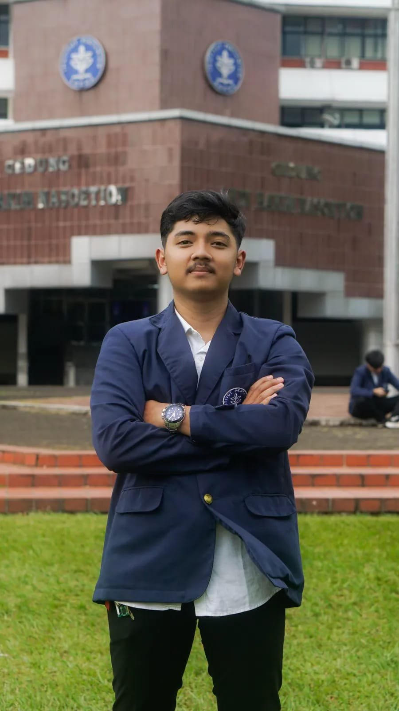
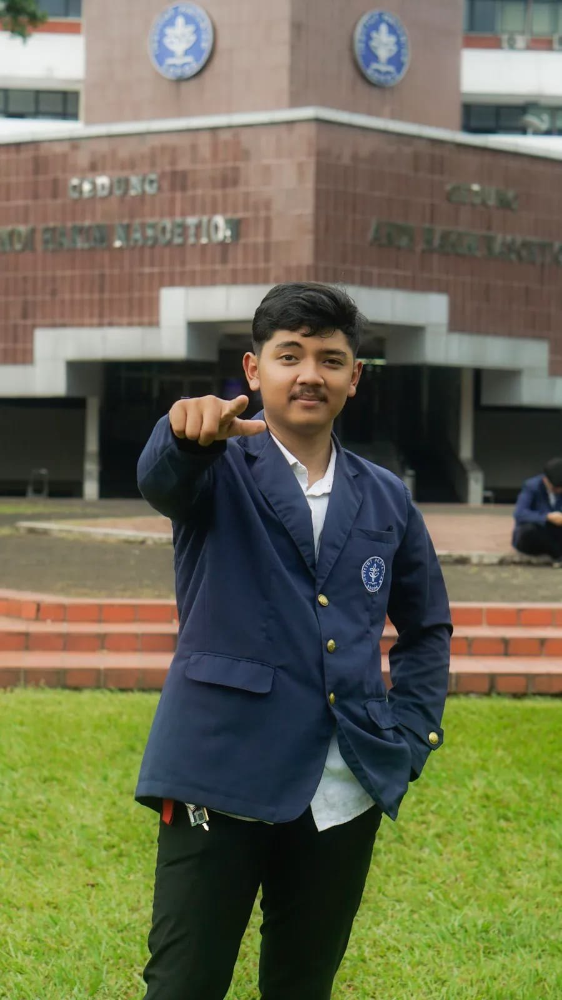
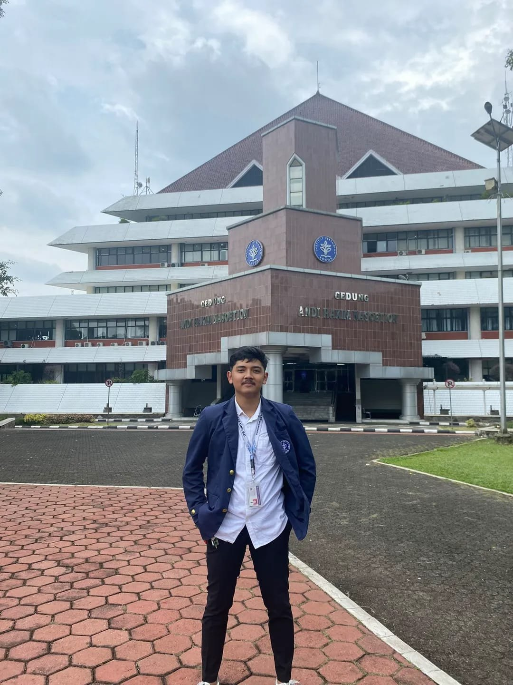

Artificial Intelligence & Data
- Machine Learning
- Data preprocessing
- Exploratory Data Analysis
- Feature engineering
- Model evaluation
- Konsep AI & deployment
Mahasiswa AI di IPB University
>
Aku belajar kecerdasan buatan sambil membuat sesuatu: dari model prediksi dan robot ESP32 sampai perangkat suara pintar dan website yang benar-benar online.
Pendiri PT Vigaro Atmajaya (dalam perencanaan)
AI student, builder, technology enthusiast.

Aku Ramadhan Tri Atmojo, mahasiswa Kecerdasan Buatan di IPB University, Sekolah Sains Data, Matematika dan Ilmu Komputer. Aku tertarik pada AI, data, robotika, IoT, dan pengembangan software.
Aku paling senang mengubah ide jadi teknologi yang bisa dipakai lewat proyek langsung: sistem machine learning, robot cerdas, perangkat berbasis AI, sampai aplikasi web.
const ramadhan = { campus: "IPB University", major: "Artificial Intelligence", mode: "learn → build → ship", building: ["ML", "robots", "IoT", "web"] };
Arahkan kursor ke orbit, atau lihat daftarnya di sebelah.
Empat proyek, empat sisi teknologi.
AI & Machine Learning
Sistem prediksi produksi susu sapi perah berbasis data tabular. Mencakup preprocessing, EDA, feature engineering, dan evaluasi model.
Robotics & Embedded System
Konsep robot transporter beroda mecanum berbasis ESP32, dengan beberapa motor, servo, gripper, dan sistem lift. Dikendalikan lewat PS3 controller.
AI & IoT
Perangkat berbasis ESP32 yang menggabungkan input suara, speaker, Wi-Fi, relay untuk smart home, dan layanan AI di cloud.
Web Development & Deployment
Website company profile multi-halaman dengan UI responsif, dibangun dengan HTML, CSS, dan JavaScript, lalu di-deploy lewat GitHub dan Vercel dengan domain sendiri.
Tempat aku belajar membangun AI.

Kecerdasan Buatan (Artificial Intelligence)
Sekolah Sains Data, Matematika dan Ilmu Komputer
Mahasiswa aktif
Memperdalam machine learning dan deployment AI, sambil terus membangun proyek robotika, IoT, dan web.
Ketik help lalu tekan Enter.
Dari proyek kuliah menuju produk dan layanan nyata.
Tahap perencanaan
PT Vigaro Atmajaya adalah rencana perusahaan teknologi yang ingin kubangun. Tujuannya mengubah pengalaman di proyek AI, robotika, IoT, dan web menjadi produk dan layanan yang berguna bagi bisnis dan masyarakat.
Saat ini perusahaan ini masih dalam tahap perencanaan. Semua yang kubangun di bagian Proyek menjadi fondasinya.
Pendiri: Ramadhan Tri Atmojo
Sistem prediksi dan analisis data untuk kebutuhan nyata, seperti yang dibangun di Lacta-Predict.
Perangkat pintar, robot, dan smart home berbasis ESP32 dan layanan cloud.
Website dan aplikasi yang dibangun, di-deploy, dan dirawat sampai benar-benar online.
Terbuka untuk kolaborasi proyek, lomba, magang, dan diskusi seputar AI, robotika, dan web.